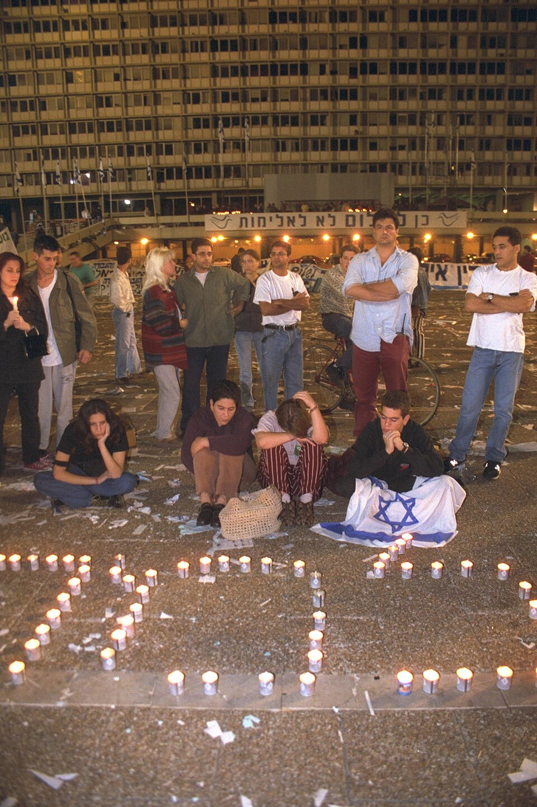

A42-POL-049 // HISTORICAL CLAIM REVIEW
The Assassination of Yitzhak Rabin
Assessment: Amir's political assassination of Rabin is conclusively documented, as is a climate of escalating hostility.

_-_TEENAGERS_LIGHTING_MEMORIAL_CANDLES_AFTER_HEARING_OF_THE_ASSASSINATION_OF_P.M._YITZHAK_RABIN.jpg){kind=link}
The precise allegation
Israeli Prime Minister Yitzhak Rabin was shot in 1995 by Yigal Amir, a Jewish Israeli extremist who opposed the Oslo peace process. Claims that security services arranged the murder or knowingly let it happen have circulated, but court evidence establishes Amir's responsibility and no reliable evidence proves a state plot. The serious question of preventive security failures is distinct from an orchestration claim.
Chronology and political context
Rabin was shot after a peace rally in Tel Aviv on November 4, 1995. Amir was arrested at the scene and confessed; an accomplice, Dror Adani, was also convicted. The assassination followed intense political rhetoric against Oslo, including extremist denunciations of Rabin. Israeli authorities investigated protective procedures, while public debate focused on whether security personnel adequately assessed threats from Jewish extremists.
Primary historical record
The criminal proceedings, police investigation, and official inquiry document Amir's actions and planning. The court convicted him of murder, and evidence included his weapon, presence, and admissions. The Shamgar Commission examined security operations but did not establish state complicity. Primary legal records prove the attack more firmly than they assess how political speech influenced the broader climate.
Corroboration and contrary evidence
The immediate physical and testimonial record strongly supports Amir as the killer, with an accomplice's role in planning. Historians document the heated campaign against Oslo and threats to Rabin. Security lapses have credible evidentiary support, but claims of an infiltrator or planted weapon have not survived verification and often rely on misunderstood protective procedures.
What remains uncertain
How much warning agencies had of Amir's intentions, whether threat assessments were properly shared, and how inflammatory rhetoric affected prevention remain debated. Investigations can establish failures without revealing every intelligence assessment. These uncertainties are institutional accountability questions, not affirmative evidence that officials intended the murder.
Calibrated verdict
Amir's political assassination of Rabin is conclusively documented, as is a climate of escalating hostility. A security failure is plausible and deserves scrutiny; a government-engineered plot is not established. Claims should specify whether they allege deliberate orchestration, negligence, or political incitement, because the available evidence supports these categories to different degrees.
What evidence could change this assessment
Declassified threat assessments, complete protective-service logs, or credible records of officials communicating with Amir could refine the accountability question. Evidence of an intentional security stand-down would support a complicity claim; evidence of timely efforts to stop him would undercut it. Neither finding changes the overwhelming evidence of Amir's direct guilt.
Sources and source limits
- Israel State Archives — Yitzhak Rabin assassination materialsCatalog search can lead to government records and inquiry materials; not all relevant records are digitized or open.
- Encyclopaedia Britannica — Yitzhak RabinProvides chronology and political context; concise reference that does not assess every security allegation.
- The New York Times — Rabin assassination reporting archiveContemporary reporting records immediate investigations and politics; news coverage is time-bound and should be checked against court findings.